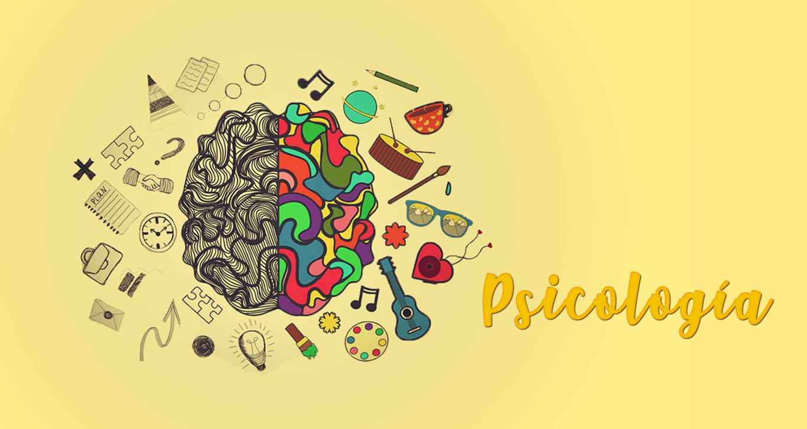

la psicologia es una profesion, que aborda tematicas complejas, entre estas el desarrollo de la educacion y el
apoyo que se puede brindar para un buen desempeño mental, fisico y animico, con el fin de que la educacion sea
mas amena y agradable para el desarrollo del conocimiento
La educación puede definirse como el proceso de socialización de los individuos. Al educarse, una
persona asimila y adquiere conocimientos. La educación también implica una concienciación cultural y
conductual, donde las nuevas generaciones adquieren conociientos objetivos y adaptativos para el entorno
que viven.
La Educación
El proceso educativo se materializa en una serie de habilidades y valores, que producen cambios
intelectuales, emocionales y sociales en cada individuo. De acuerdo al grado de concienciación
alcanzado,
estos valores pueden durar toda la vida o sólo un periodo de tiempo.

El resultado final del proceso educativo es incierto, ya que el ser humano nunca deja de aprender, por
ende, cambia sus conductas y sus preceptos constantement. Sin embargo, las etapas iniciales de la vida se
consideran cruciales para la formación y educación del individuo en aspectos toda clase de aspectos como,
formales como en
manera afectiva, social, cultural, etc., ya que serán responsables del modo de actuar que el individuo
desarrolle hasta su adultez.
Al mismo tiempo, la educación formal o académica es considerada en nuestras sociedades una institución
al servicio del ser humano, de su mejoramiento y su aprendizaje, en el que puede no sólo adquirir
conocimientos profundos y complejos, sino también moldear una forma de pensamiento en los asuntos de la
ética, la moral, la afectividad, etc.
.jpg)
.jpg)
.jpg)